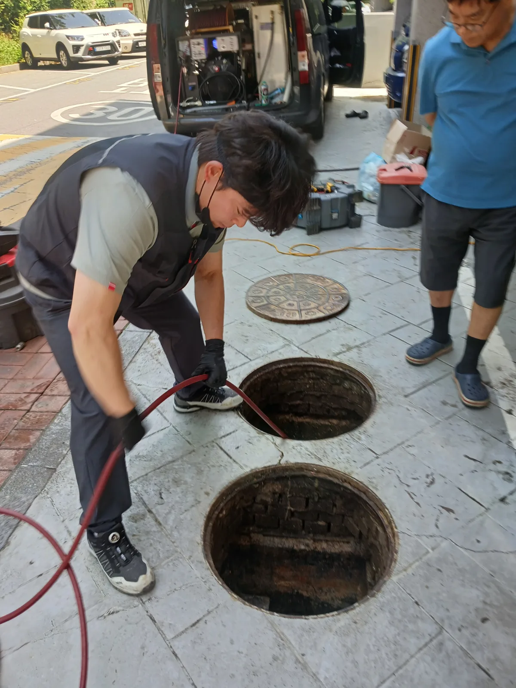

강동구 명일동 고압세척, 현장 도착 후 진단
강동구 명일동 변기역류 현장에 도착해 변기의 수위와 배수 반응을 확인했습니다. 물을 내리지 않은 상태에서도 변기 내부의 물이 꿀렁거리며 움직이고 있었으며, 단순히 변기 자체에 이물질이 걸린 증상과는 차이가 있었습니다.
이처럼 변기에서 반복적인 꿀렁거림이 나타나는 경우에는 변기 내부뿐 아니라 오수 배관이나 건물 외부 출수관의 막힘도 의심해야 합니다. 먼저 위쪽에서 배관 내시경 검사를 진행해 내부 상태와 배관 방향을 확인한 뒤, 명일동 빌라의 필로티 하부에 설치된 배수시설을 점검했습니다.
하부에는 하수가 모이는 집수정과 오수가 유입되는 정화조가 나란히 설치돼 있었습니다. 두 시설은 각각 분리돼 있었지만 최종 배출 단계에서는 하나의 출수관으로 합류해 가까운 공공하수관로로 연결되는 구조였습니다.
공공하수관로가 건물 가까이에 있다는 점은 다행이었지만, 합류 지점부터 출수관 사이가 심하게 막혀 하수와 오수가 모두 제대로 빠져나가지 못하고 있었습니다. 강동구 명일동 변기역류를 완전히 해결하려면 집수정과 정화조 양쪽에서 반복 작업이 필요한 상황이었습니다.
1단계: 증상 확인과 필요한 장비 작업
강동구 명일동 빌라의 하수 집수정과 오수 정화조를 모두 개방해 내부 수위와 유입·출수 방향을 확인했습니다. 작업자가 직접 내부 연결 구조를 살피고, 두 시설에서 나온 배관이 하나로 합쳐지는 출수 구간의 위치를 파악했습니다.
먼저 고압세척 호스를 출수관에 투입해 강한 수압으로 내부에 쌓인 오염물과 슬러지를 분쇄했습니다. 그러나 배관 안쪽의 막힘이 단단하고 범위도 깊어 한 차례의 고압세척만으로는 충분한 통수 공간이 확보되지 않았습니다.

2단계: 원인 구간 처리와 정상 작동 확인
출수관 내부의 굳은 막힘 물질을 제거하기 위해 리지드 K9-204 플렉스샤프트를 투입했습니다. 샤프트 체인을 회전시키며 배관스케일링을 진행하고, 이어서 고압세척으로 분쇄된 오염물을 외부 공공하수관로 방향으로 씻어냈습니다.
하수 집수정과 오수 정화조 양쪽에서 고압세척과 리지드 샤프트 작업을 번갈아 반복했습니다. 작업 도중 어느 순간 막혀 있던 출수관이 완전히 관통되면서 고여 있던 물이 빠르게 배출되기 시작했습니다.
이후 양쪽 시설에서 충분한 물을 흘려보내 하나로 합류하는 출수관과 공공하수관로까지의 배수 상태를 점검했습니다. 변기의 꿀렁거림과 역류 증상이 사라지고 오수와 하수가 정상적으로 배출되는 것을 확인했습니다.

작업 결과와 재발 방지 안내
강동구 명일동 변기역류의 원인이었던 공용 출수관 막힘을 해결하면서 변기의 비정상적인 꿀렁거림이 사라지고 빌라 전체의 배수 흐름이 정상적으로 회복됐습니다.
이번 명일동 현장은 하수 집수정과 오수 정화조가 분리돼 있으면서도 최종 출수관은 하나로 합쳐지는 구조였습니다. 이런 구조에서는 공용 출수관이 막히면 변기뿐 아니라 건물 내 여러 배수시설에 동시에 이상 증상이 나타날 수 있습니다.
변기를 사용하지 않는데도 물이 꿀렁거리거나 악취, 기포, 수위 변화가 반복된다면 단순 변기막힘으로 판단하지 말고 정화조와 집수정, 외부 출수관까지 함께 점검해야 합니다. 신라건축설비는 강동구 명일동 변기역류부터 복잡한 집수정·정화조 출수관 막힘까지 전문 장비를 활용해 늘 당신 곁에서 정확하게 해결해드리겠습니다.
최종 조치: 빌라 내부 변기 배관을 내시경으로 검사한 뒤 필로티 하부의 하수 집수정과 오수 정화조를 모두 개방했습니다. 두 시설이 하나의 출수관으로 합류하는 구조를 확인하고, 집수정과 정화조 양쪽에서 고압세척과 리지드 K9-204 샤프트 작업을 반복해 막힌 출수 구간을 관통했습니다.
현장 방문 전 확인하는 비용과 작업 범위
신라건축설비는 현장 증상과 배관 구조를 확인한 뒤 필요한 작업과 예상 비용을 안내합니다. 단순 관통으로 해결되는지, 배관내시경·석션·고압세척 또는 추가 장비가 필요한지는 현장 상태에 따라 달라집니다. 출장비와 야간 작업비, 추가 장비 비용이 발생할 수 있는 경우 작업 전에 먼저 설명하고 동의를 받은 범위에서 진행합니다.
업체를 선택할 때 확인할 사항
무조건적인 ‘0원’ 표현보다 실제 작업 범위, 추가 비용 조건, 사용 장비와 사후 대응 기준을 확인하는 것이 중요합니다. 해결되지 않았을 때의 비용 기준과 작업 후 동일 증상 발생 시 점검 범위를 사전에 문의해두면 불필요한 분쟁을 줄일 수 있습니다.
강동구 고압세척 자주 묻는 질문
고압세척은 어떤 경우에 필요한가요?
변기를 사용하지 않고 가만히 두어도 내부의 물이 반복적으로 꿀렁거리며 움직이는 증상이 발생했습니다. 배관 내부의 공기가 제대로 빠져나가지 못하고 변기 쪽으로 밀려 올라오는 상태로, 막힘이 심해지면 오수가 역류할 가능성이 높은 상황이었습니다.처럼 증상이 나타나더라도 원인은 현장마다 다를 수 있습니다. 장비와 배관 구조를 확인한 뒤 필요한 작업 범위를 안내합니다.
배관내시경도 함께 사용하나요?
작업 전 증상과 현장 여건을 확인해 예상 범위와 비용을 먼저 안내합니다. 변기 탈거, 장비 추가 투입 또는 공용배관 작업이 필요한 경우 고객 동의 없이 임의로 진행하지 않습니다.
작업 범위와 비용은 어떻게 정하나요?
완료 후 정상 작동을 함께 확인하고 작업 범위에 따른 사후 안내를 드립니다. 동일 증상이 반복되면 현장 기록을 기준으로 원인을 다시 점검합니다.
고압세척 서울·경기 출동지역
신라건축설비는 강동구 명일동 현장을 포함해 서울 25개 구와 경기도 31개 시·군의 배관 문제를 상담합니다. 현장 거리와 기사 배정 상황에 따라 출동 가능 여부를 먼저 안내드립니다.
서울 전 지역
강남구 · 강동구 · 강북구 · 강서구 · 관악구 · 광진구 · 구로구 · 금천구 · 노원구 · 도봉구 · 동대문구 · 동작구 · 마포구 · 서대문구 · 서초구 · 성동구 · 성북구 · 송파구 · 양천구 · 영등포구 · 용산구 · 은평구 · 종로구 · 중구 · 중랑구
경기도 주요 출동지역
수원시 · 용인시 · 고양시 · 화성시 · 성남시 · 부천시 · 남양주시 · 안산시 · 평택시 · 안양시 · 시흥시 · 파주시 · 김포시 · 의정부시 · 광주시 · 하남시 · 광명시 · 군포시 · 양주시 · 오산시 · 이천시 · 안성시 · 구리시 · 의왕시 · 포천시 · 양평군 · 여주시 · 동두천시 · 과천시 · 가평군 · 연천군